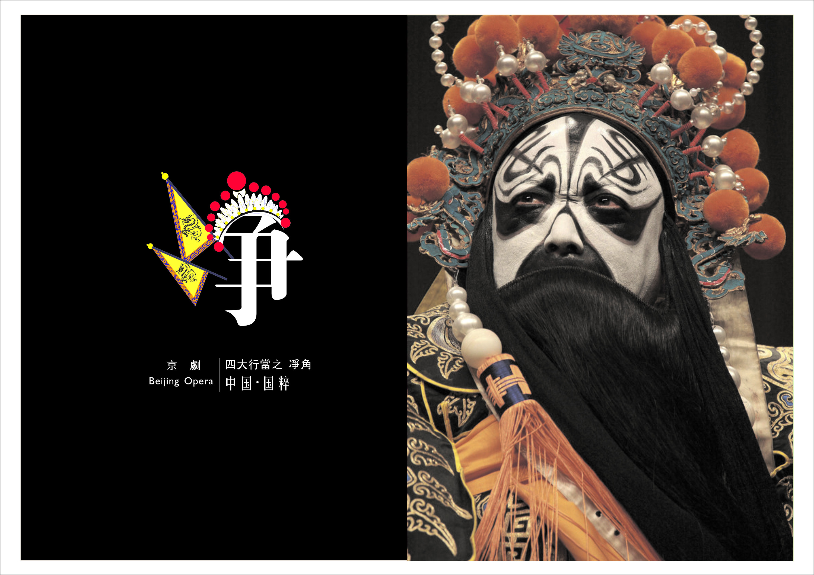
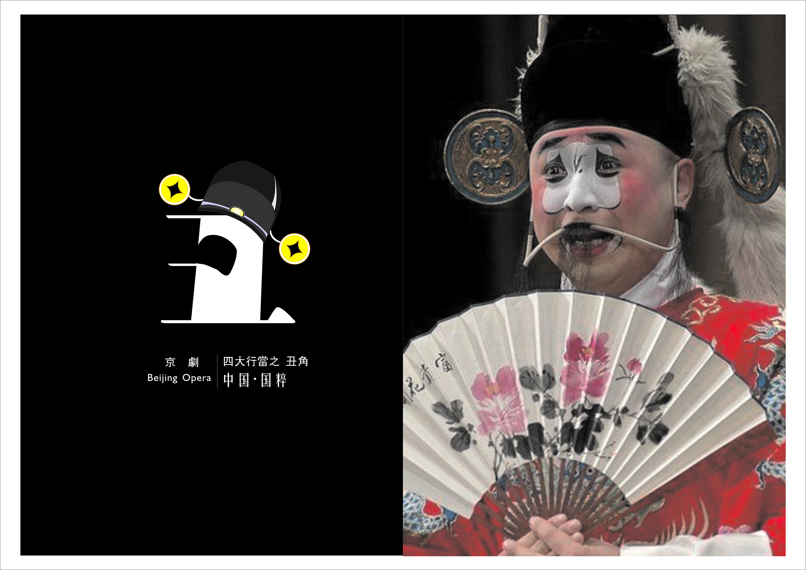

Chinese opera is mainly composed of three different art forms: folk song and dance, rap and funny opera. Originated from the original song and dance, it is a long-established and comprehensive stage art style.
There are many kinds of Chinese opera dramas. According to incomplete statistics, there are about 306 kinds of opera dramas in various ethnic regions in China, and tens of thousands of traditional plays. Among them, Peking opera, Yue opera, Huangmei opera, Pingju opera, and Henan opera are in turn called China's five major opera dramas.
Peking opera is considered as the Chinese national quintessence.
Classification of performers and roles
The roles on the Peking Opera stage fall into four major roles-Sheng (生), Dan (旦), Jing (净), Chou (丑).
Jing
Chou
Sheng is the male role in Peking Opera. This role has several subtypes according to the character’s age, personality and status.
Dan is the term for female roles in Peking Opera. The roles can be divided into six subtypes based on characters played.
A Jing role is a prominent male character with striking looks and high social position. Both positive and negative characters can be played in this role.
Chou is a comedy role in Peking Opera.The characteristic of this type of painted face role is a small patch of white chalk around the nose.